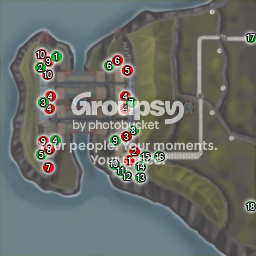

Iron South Highway
Monster : Larva Pururu / Gangan / Cinnamon / Rock Eater
Material : Spicy Herb / Peanut / Rock / Iron Stone / Mineral Lump / Wood Box 6
Attribute : Fire
NPC
1 Yan [เควส LV.29]
2 Resurrection Soldier [บันทึกเป็นจุด Save Point]
3 Registance Soldier [ส่งไปยัง Sky Tower Island]
4 Iron City Guard
5 Furniture Craftsman
6 Peje
7 Flower Girl [เควส Skill Point]
8 Patrol Mercenary
9 Transiver Group
10 Air Force Guard
Warp
1 Iron City Downstairs
2 Air Force Lobby
3 Representative Lobby [Cleanup Campaign]
4 Iron City Downstairs
5 Mercenary Lobby
6 Iron City Downstairs
7 Assembly Lobby [เควสซื้อ Gathring Four][เควสรองเท้า LV.55 สาย FT,SU]
8 Mansion [เควสชุดประจำอาชีพ LV.45 สาย FT]
9 Iron City Downstairs
10 Iron City Pub [เควสหมวก Farmer Class LV.35]
11 Iron City Iden Shop
12 Iron City Shop
13 Gem Shop Iron City
14 Tailor Shop Iron City
15 Iron South Highway
16 Iron South City
17 Volcano
18 Volcano
 ... เข้ามากั้นอีกรอบ
... เข้ามากั้นอีกรอบ สนับสนุนเต็มที่ เพื่อสงคม
สนับสนุนเต็มที่ เพื่อสงคม